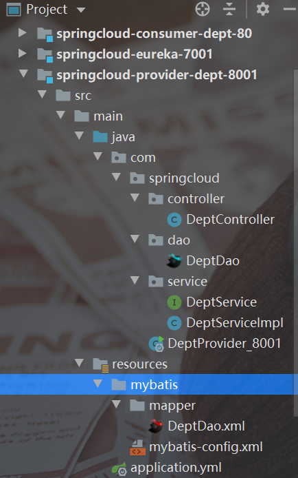

1、创建Maven父工程
<?xml version="1.0" encoding="UTF-8"?>
<project xmlns="http://maven.apache.org/POM/4.0.0"
xmlns:xsi="http://www.w3.org/2001/XMLSchema-instance"
xsi:schemaLocation="http://maven.apache.org/POM/4.0.0 http://maven.apache.org/xsd/maven-4.0.0.xsd">
<modelVersion>4.0.0</modelVersion>
<groupId>org.example</groupId>
<artifactId>SpringCloud</artifactId>
<version>1.0-SNAPSHOT</version>
<modules>
<module>springcloud-api</module>
<module>springcloud-provider-dept-8001</module>
<module>springcloud-consumer-dept-80</module>
<module>springcloud-eureka-7001</module>
</modules>
<!--打包方式-->
<packaging>pom</packaging>
<properties>
<junit.version>4.13.2</junit.version>
<lombok.version>1.18.16</lombok.version>
<log4j.version>1.2.17</log4j.version>
<logback.version>1.3.0-alpha9</logback.version>
</properties>
<dependencyManagement>
<dependencies>
<!--springcloud依赖-->
<dependency>
<groupId>org.springframework.cloud</groupId>
<artifactId>spring-cloud-dependencies</artifactId>
<version>Hoxton.SR12</version>
<type>pom</type>
<scope>import</scope>
</dependency>
<!--springboot依赖-->
<dependency>
<groupId>org.springframework.boot</groupId>
<artifactId>spring-boot-dependencies</artifactId>
<version>2.2.5.RELEASE</version>
<type>pom</type>
<scope>import</scope>
</dependency>
<!--数据库-->
<dependency>
<groupId>mysql</groupId>
<artifactId>mysql-connector-java</artifactId>
<version>8.0.15</version>
<type>jar</type>
</dependency>
<!--数据源-->
<dependency>
<groupId>com.alibaba</groupId>
<artifactId>druid</artifactId>
<version>1.1.12</version>
</dependency>
<!--springboot mybatis自动配置-->
<dependency>
<groupId>org.mybatis.spring.boot</groupId>
<artifactId>mybatis-spring-boot-starter</artifactId>
<version>1.3.0</version>
</dependency>
<!--junit-->
<dependency>
<groupId>junit</groupId>
<artifactId>junit</artifactId>
<version>${junit.version}</version>
<scope>test</scope>
</dependency>
<!--lombok-->
<dependency>
<groupId>org.projectlombok</groupId>
<artifactId>lombok</artifactId>
<version>${lombok.version}</version>
</dependency>
<!--Log4j-->
<dependency>
<groupId>log4j</groupId>
<artifactId>log4j</artifactId>
<version>${log4j.version}</version>
</dependency>
<dependency>
<groupId>ch.qos.logback</groupId>
<artifactId>logback-core</artifactId>
<version>${logback.version}</version>
</dependency>
</dependencies>
</dependencyManagement>
</project>
2、子工程 springcloud-api（实体类）
2、1、添加依赖
<?xml version="1.0" encoding="UTF-8"?>
<project xmlns="http://maven.apache.org/POM/4.0.0"
xmlns:xsi="http://www.w3.org/2001/XMLSchema-instance"
xsi:schemaLocation="http://maven.apache.org/POM/4.0.0 http://maven.apache.org/xsd/maven-4.0.0.xsd">
<parent>
<artifactId>SpringCloud</artifactId>
<groupId>org.example</groupId>
<version>1.0-SNAPSHOT</version>
</parent>
<packaging>jar</packaging>
<modelVersion>4.0.0</modelVersion>
<artifactId>springcloud-api</artifactId>
<!--当前Module自己要用的依赖-->
<dependencies>
<dependency>
<groupId>org.projectlombok</groupId>
<artifactId>lombok</artifactId>
</dependency>
<dependency>
<groupId>mysql</groupId>
<artifactId>mysql-connector-java</artifactId>
</dependency>
<dependency>
<groupId>com.alibaba</groupId>
<artifactId>druid</artifactId>
</dependency>
<!-- https://mvnrepository.com/artifact/org.springframework.boot/spring-boot-maven-plugin -->
</dependencies>
</project>
2、2、创建实体类
package com.springcloud.pojo;
import lombok.Data;
import lombok.NoArgsConstructor;
import lombok.experimental.Accessors;
import java.io.Serializable;
/**
* @Auther:LiKang
* @Date:2021/8/22 -08 -22 -14:13
* @Description: com.springcloud.pojo
* @version: 1.0
*/
@Data
@NoArgsConstructor//无参构造
@Accessors(chain=true)//链式写法
public class Dept implements Serializable { //实体类，orm 类表关系映射
private Long deptno;//主键
private String dname;
private String db_source;
public Dept(String dname) {
this.dname = dname;
}
/*
*
* Dept dept =new Dept();
* dept.setDeptNo(11);
* 链式写法：
* dept.setDeptNo(11).setDname().setDb_source();
* */
}
3、子工程 springcloud-provider-dept-8001（服务的提供者）
3、1、添加依赖
<?xml version="1.0" encoding="UTF-8"?>
<project xmlns="http://maven.apache.org/POM/4.0.0"
xmlns:xsi="http://www.w3.org/2001/XMLSchema-instance"
xsi:schemaLocation="http://maven.apache.org/POM/4.0.0 http://maven.apache.org/xsd/maven-4.0.0.xsd">
<parent>
<artifactId>SpringCloud</artifactId>
<groupId>org.example</groupId>
<version>1.0-SNAPSHOT</version>
</parent>
<modelVersion>4.0.0</modelVersion>
<artifactId>springcloud-provider-dept-8001</artifactId>
<dependencies>
<!--需要拿到实体类，需要配置API module-->
<dependency>
<groupId>org.example</groupId>
<artifactId>springcloud-api</artifactId>
<version>1.0-SNAPSHOT</version>
</dependency>
<!--junit-->
<dependency>
<groupId>junit</groupId>
<artifactId>junit</artifactId>
</dependency>
<dependency>
<groupId>ch.qos.logback</groupId>
<artifactId>logback-core</artifactId>
</dependency>
<dependency>
<groupId>org.mybatis.spring.boot</groupId>
<artifactId>mybatis-spring-boot-starter</artifactId>
</dependency>
<!--test-->
<dependency>
<groupId>org.springframework.boot</groupId>
<artifactId>spring-boot-test</artifactId>
</dependency>
<dependency>
<groupId>org.springframework.boot</groupId>
<artifactId>spring-boot-starter-web</artifactId>
</dependency>
<!--热部署-->
<dependency>
<groupId>org.springframework.boot</groupId>
<artifactId>spring-boot-devtools</artifactId>
</dependency>
</dependencies>
<!--springboot 打包插件-->
<build>
<plugins>
<plugin>
<groupId>org.springframework.boot</groupId>
<artifactId>spring-boot-maven-plugin</artifactId>
<version>2.3.0.RELEASE</version>
</plugin>
</plugins>
</build>
</project>
3、2、添加配置
server:
port: 8001
#mybatis配置
mybatis:
type-aliases-package: com.springcloud.pojo
config-location: classpath:mybatis/mybatis-config.xml
mapper-locations: classpath:mybatis/mapper/*.xml
#spring配置
spring:
application:
name: springcloud-provider-dept
datasource:
type: com.alibaba.druid.pool.DruidDataSource #数据源
driver-class-name: com.mysql.cj.jdbc.Driver
url: jdbc:mysql://localhost:3306/db01?useUnicode=true&characterEncoding=utf-8&serverTimezone=GMT%2B8
username: root
password: 2019936206
3、3、主启动类
package com.springcloud;
import org.springframework.boot.SpringApplication;
import org.springframework.boot.autoconfigure.SpringBootApplication;
import org.springframework.cloud.netflix.eureka.EnableEurekaClient;
/**
* @Auther:LiKang
* @Date:2021/8/22 -08 -22 -15:19
* @Description: com.springcloud
* @version: 1.0
*/
//启动类
@SpringBootApplication
public class DeptProvider_8001 {
public static void main(String[] args) {
SpringApplication.run(DeptProvider_8001.class,args);
}
}
编写具体的服务：

4、springcloud-consumer-dept-80（服务消费者）
4、1、添加依赖
<?xml version="1.0" encoding="UTF-8"?>
<project xmlns="http://maven.apache.org/POM/4.0.0"
xmlns:xsi="http://www.w3.org/2001/XMLSchema-instance"
xsi:schemaLocation="http://maven.apache.org/POM/4.0.0 http://maven.apache.org/xsd/maven-4.0.0.xsd">
<parent>
<artifactId>SpringCloud</artifactId>
<groupId>org.example</groupId>
<version>1.0-SNAPSHOT</version>
</parent>
<modelVersion>4.0.0</modelVersion>
<artifactId>springcloud-consumer-dept-80</artifactId>
<dependencies>
<!--实体类-->
<dependency>
<groupId>org.example</groupId>
<artifactId>springcloud-api</artifactId>
<version>1.0-SNAPSHOT</version>
</dependency>
<!--springboot web -->
<dependency>
<groupId>org.springframework.boot</groupId>
<artifactId>spring-boot-starter-web</artifactId>
</dependency>
<!--热部署-->
<dependency>
<groupId>org.springframework.boot</groupId>
<artifactId>spring-boot-devtools</artifactId>
</dependency>
</dependencies>
</project>
4、2、添加配置
4、3、添加REST配置
package com.springcloud.config;
import org.springframework.context.annotation.Bean;
import org.springframework.context.annotation.Configuration;
import org.springframework.web.bind.annotation.RestController;
import org.springframework.web.client.RestTemplate;
/**
* @Auther:LiKang
* @Date:2021/8/22 -08 -22 -22:31
* @Description: com.springcloud.config
* @version: 1.0
*/
@Configuration//配置类
public class ConfigBean {
@Bean
public RestTemplate getRestTemplate(){
return new RestTemplate();
}
}
4、4、通过REST调用远程服务（服务提供者的服务）
package com.springcloud.controller;
import com.springcloud.pojo.Dept;
import com.sun.org.apache.regexp.internal.RE;
import org.springframework.beans.factory.annotation.Autowired;
import org.springframework.web.bind.annotation.PathVariable;
import org.springframework.web.bind.annotation.RequestMapping;
import org.springframework.web.bind.annotation.ResponseStatus;
import org.springframework.web.bind.annotation.RestController;
import org.springframework.web.client.RestTemplate;
import java.util.List;
/**
* @Auther:LiKang
* @Date:2021/8/22 -08 -22 -22:27
* @Description: com.springcloud.controller
* @version: 1.0
*/
@RestController
public class DeptConsumerController {
//理解：消费者，不应该有server层
//RestTemplate .....供我们直接调用就可以了，注册到Spring中
//(url,实体：Map，Class<T> reponseType)
@Autowired
private RestTemplate restTemplate;//提供多种便捷访问远程http服务的方法，简单的restful服务模板
private static final String REST_URL_PREFIX="http://localhost:8001";
@RequestMapping("/consumer/dept/get/{id}")
public Dept get(@PathVariable("id")Long id){
return restTemplate.getForObject(REST_URL_PREFIX+"/dept/get/"+id,Dept.class);
}
@RequestMapping("/consumer/dept/add")
public boolean add(Dept dept){
return restTemplate.postForObject(REST_URL_PREFIX+"/dept/add",dept,Boolean.class);
}
@RequestMapping("/consumer/dept/list")
public List<Dept> queryAll(){
return restTemplate.getForObject(REST_URL_PREFIX+"/dept/list",List.class);
}
}
4、5、添加启动类
package com.springcloud;
import org.springframework.boot.SpringApplication;
import org.springframework.boot.autoconfigure.SpringBootApplication;
import javax.xml.crypto.Data;
/**
* @Auther:LiKang
* @Date:2021/8/22 -08 -22 -22:57
* @Description: com.springcloud
* @version: 1.0
*/
@SpringBootApplication
public class DeptConsumer_80 {
public static void main(String[] args) {
SpringApplication.run(DeptConsumer_80.class,args);
}
}